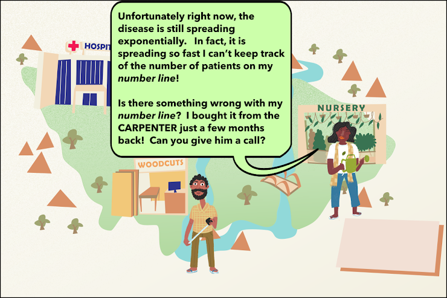

# The Math of Covid-19 ### How simple math can help us stop the spread together!
## Chapter 3: The Garden of Binary Trees Let's give the Gardener a video call.
Get out your pencil and paper!
What do binary trees tell us about COVID-19?

A malfunctioning number line? Made by the local Carpenter?
Better visit the Carpenter and figure out why this number line can't keep up with Covid cases!